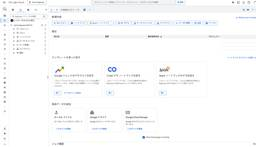
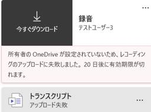
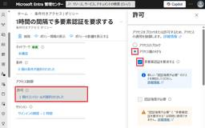
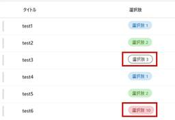
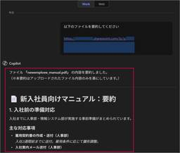
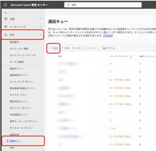

JBS Tech Blog
https://blog.jbs.co.jp/
JBS Tech Blogは、日本ビジネスシステムズ（JBS）の社員が分担して執筆を担当し、技術情報を発信しているブログです！Microsoft製品や生成AI関係の最新情報をはじめ、様々な製品やサービスの情報を幅広く公開しています。2022年3月より運用を開始し、毎営業日の1記事以上公開を継続中です！
フィード

Microsoft Entra Joinした端末に、Microsoft Entra ID上のユーザーでサインインできない事象の解決方法
JBS Tech Blog
Microsoft Entra ID（以下Entra ID）に参加した仮想マシンの端末が、テナント上のアカウントを使用して端末にログインできないエラーが発生しました。 本記事では、このエラーの原因と解決方法について解説します。 前提条件 事象 切り分けの実施方針 CredSSPの無効化 NLAの無効化 認証されたユーザーグループの追加 切り分けの実施手順 CredSSPの無効化 NLAの無効化 認証されたユーザーグループの追加 動作確認 最後に 前提条件 Azure上にWindows11の仮想マシンを作成し、当該仮想マシンをMicrosoft Entra IDに参加させた構成を想定します。 事…
2日前
Claude CodeをWindows環境とMicrosoft Foundryを用いて利用する方法
JBS Tech Blog
Claude Codeを利用する際の認証方法は、Claudeアカウントを利用する方法と、APIキーを用いる方法があります。 本記事ではWindows環境とMicrosoft Foundry（以下、Foundryと記載します）のAPIキーを用いたClaude Codeの初期設定をする方法について解説します。 事前準備 Git for Windowsのインストール Foundryでのモデルデプロイと各種情報取得 Claude Codeのインストール APIキーの設定 補足：Claude Code利用時に便利なコマンド 起動時に利用 起動中に利用 まとめ 事前準備 本節では、Windows環境でCl…
3日前

【Microsoft×生成AI連載】Microsoft 365 CopilotのPrompt Coachを使ってみた
JBS Tech Blog
【Microsoft×生成AI連載】シリーズの記事です。 Microsoft 365 Copilotには、Prompt Coachというプロンプト作成支援機能があります。 本記事では、このPrompt Coachについて紹介します。 これまでの連載 Prompt Coachの紹介 Prompt Coachの使用方法 Prompt Coachを使ってみる Prompt Coachを使用する際のTips 制約条件がある場合は最初に必ず伝える 判断が必要なところは数値を用いる 利用シーンとメリット、注意点 利用シーン メリット 注意点 まとめ おまけ(Copilot Chatによる本記事の要約) こ…
3日前

BigQuery初心者がデータ分析を始めてみた【第1回】プロジェクト作成からクエリ実行まで
JBS Tech Blog
BigQueryはGoogleが提供するクラウドデータウェアハウスサービスで、大量のデータを高速に分析できます。この記事では、BigQueryの基本的な操作方法やその特徴を解説し、実際の利用シーンでの利便性を紹介します。
3日前

【Microsoft Teams】録画後に「OneDrive が有効になっていません」と表示され保存できない事象の原因と対処法
JBS Tech Blog
Microsoft Teams（以下、Teams）で会議を録画した後に、「OneDriveが有効になっていません」というエラーが表示され、録画データが保存されない事象に遭遇しました。 本記事では、実際に発生したエラー内容と切り分けの過程、そして最終的に特定できた原因と対処法を整理します。同様のトラブルに遭遇した方の参考になれば幸いです。 ※本検証で使用したアカウントは、Microsoft 365 管理センターで新規作成したユーザーアカウントです。OneDrive への初回アクセス前の状態でした。 エラー概要 実施した確認・切り分け OneDrive の利用確認（Web） Windowsクライア…
3日前

条件付きアクセスの「サインインの頻度」を設定し、再認証のタイミングを制御する
JBS Tech Blog
Microsoft Entra ID を利用している環境では、Microsoft 365 アカウントに対する多要素認証（MFA）の要求頻度を制御したいといった声も少なくありません。 本記事では、条件付きアクセス制御の設計者を対象として、条件付きアクセスの「サインインの頻度」を利用した定期的な多要素認証（MFA）について、設定方法や挙動、運用上の注意点を解説します。 「サインインの頻度」とは 条件付きアクセス「サインインの頻度」の設定方法について 「サインインの頻度」の設定方法 動作検証 ブラウザー版：Outlook on the web デスクトップ版：New Outlook 「サインインの頻…
3日前
Copilot Studio エージェントで Azure Monitor アラート調査を自動化してみた
JBS Tech Blog
Azure Monitorのアラートを元に、Microsoft Copilot Studioのエージェントが自動で分析し、Teamsにレポートを投稿するシステムの検証事例。効率化に興味がある方必見。
4日前
【Microsoft×生成AI連載】Microsoft Copilot StudioでMicrosoft SharePoint Lists MCPを使用してみた
JBS Tech Blog
【Microsoft×生成AI連載】寺澤です。今回はMicrosoft Copilot StudioでMicrosoft SharePoint Lists MCPを使用します。 これまでは、SharePointコネクタを用い内部処理を細かく設計・設定する必要がありましたが、MCPを使用することで、どのような活用が可能かを検証してみます。 Microsoft Copilot Studioに興味がある方、普段から利用されている方などさまざまな方に読んでいただきたい記事となっておりますので、ぜひご覧ください。 ※この記事の情報は2026/3/9時点のものです。 これまでの連載 Microsoft S…
4日前
Copilot StudioのエージェントでHuman in the loopを実装する
JBS Tech Blog
Copilot Studioでエージェントを作成すると、メールの送信やテーブルへのデータ登録など、外部へのアクションを伴う動作をさせることが出来ます。 一方、想定外のアクションをエージェントが実行しないよう、人間が承認したうえで動作をさせたいケースもあるかと思います。そういった動作を実現するため、Copilot StudioではHuman in the loopの仕組みを実装できるようになっています。 今回は、Copilot Studioを利用してHuman in the loopを実装する方法を検証します。 おことわり Human in the loopとは Human in the loo…
4日前

SharePoint Online：選択肢列の値が変更できない場合の一括変換方法（クイック操作の値の設定を活用）
JBS Tech Blog
SPOリストの選択肢列変更で直面する問題に、クイック操作による一括更新手順を紹介。運用効率を高めるヒントを得られます。
4日前
Snowflake Openflow の概要をまとめてみた
JBS Tech Blog
近年、SaaSの普及や生成AIの活用により、RDBだけでなくドキュメントやログ、イベントデータなど多様な形式のデータを迅速にSnowflakeへ集約し、分析・AIに活かすニーズが高まっています。 一方で、従来のETLやELTツールでは、非構造化データや柔軟なフロー制御、リアルタイム処理を同一基盤で扱うことが難しいケースも少なくありません。 Openflowは、あらゆるデータソースとSnowflakeで柔軟なデータフローを構成でき、バッチ、ストリーミング、非構造化まで統合的に扱えるデータ統合プラットフォームです。Apache NiFiベースのオープンな設計で、AI活用に直結するパイプラインを短時…
5日前

Copilot Studioでチャットに入力されたファイルのURLを処理するエージェントを作成する
JBS Tech Blog
Copilot Studioは、AIエージェントを簡単に構築できる製品です。単純なチャットボットを構築することももちろんですが、より自律的判断を伴うタスクを実行することも可能です。 今回は、Copilot Studioを利用した自律的判断を伴うエージェントの例として、チャットに入力したSharePointファイルURLを処理するチャットボットを実装します。 おことわり 今回作成するエージェント 作成直後のエージェントの動作 事前準備 エージェントの作成 テストデータの準備 エージェントの動作確認 ファイルのURLを処理する機能の実装 トピックの作成 コネクタの追加 エージェントフローの実装 エ…
5日前

【Teams Phone】シリアルルーティングによる「順次鳴動」の設定方法
JBS Tech Blog
Teams Phoneの導入において、通話キューを設定する際、「同時に全員を鳴らすのではなく、順番に電話を鳴らしたい」という要件は非常によくあります。 そのようなケースで利用されるのが シリアルルーティング（Serial Routing） です。 Microsoftの公式ドキュメントにも概要の記載はありますが、実際の画面に即した具体的な設定方法や各設定項目の考え方までは明記されていない部分もあります。 Microsoft Teamsで通話キューを作成する - Microsoft Teams | Microsoft Learn そこで本記事では、Teams Phoneの通話キューにおけるシリアル…
5日前
Snowflakeのデータシェアリングでアカウントレベルのマスキングポリシーを使ってみた
JBS Tech Blog
Snowflakeには、アカウント間で安全かつ効率的にデータを共有できるデータシェアリング機能があります。データをコピーすることなくリアルタイムに共有できる点が大きな特長です。 一方で、外部アカウントへデータを共有する際には、閲覧者ごとに表示内容を制御する仕組みが重要になります。その代表的な機能がマスキングポリシーです。 本記事では、Snowflakeのデータシェアリング機能に焦点を当て、マスキングポリシーの制御方法の一つであるアカウントレベル制御を用いた実装方法をご紹介します。 なお、本記事ではマスキングポリシー自体の概要説明には触れず、データシェアリングと組み合わせた具体的な実装手順にフォ…
6日前
【Microsoft Purview】秘密度ラベルの基本操作
JBS Tech Blog
クラウドサービスの普及やリモートワークの定着により、あらゆる情報がこれまで以上に多様な場所で作成、共有されるようになりました。その一方で、意図しない情報共有や誤送信といった人為的なミスによる情報漏洩リスクもあります。 こうした背景からデータそのものを守る仕組みの一つがMicrosoft Purviewの秘密度ラベルです。 本記事では秘密度ラベルの基本的な考え方から、実際にラベルを作成、展開するまでの流れをご紹介します。 秘密度ラベルとは 秘密度ラベルの作成ステップ 秘密度ラベルの作成 ラベル発行ポリシーでユーザーへ展開 Wordファイルからラベルが表示されることを確認 まとめ 秘密度ラベルとは…
6日前

Office for the webで「秘密度」ボタンを表示させる方法
JBS Tech Blog
Office for the webのリボンに「秘密度」ボタンを表示させ、秘密度ラベルを利用する際には、事前に有効化設定を行う必要があります。 本記事では、有効化を行うための2つの方法をご紹介します。 ポータルを使用した有効化手順 PowerShellを使用した有効化手順 ポータルを使用した有効化手順 PowerShellを使用した有効化手順 さいごに ポータルを使用した有効化手順 Microsoft Purviewの管理ポータルにグローバル管理者でサインインします。https://purview.microsoft.com/ Purview管理センターの左メニューから、[ソリューション]>[…
8日前
【Teams Phone】ブラインド転送時のオプション「コールバック」と「呼び出しトピック」の動作まとめ
JBS Tech Blog
Microsoft Teams Phone では、通話の取り次ぎ方法として複数の転送機能が提供されています。代表的な機能は「転送（ブラインド転送）」と「相談して転送」です。 その中でもブラインド転送は、転送先に事前確認を行わずに素早く通話を引き渡せるため、業務効率の観点では非常に有効な手段です。一方で、往来は次のような課題がありました。 転送先が応答しなかった場合にどうなるのか分かりづらい 転送先が「なぜこの電話が転送されてきたのか」を把握しづらい これらの課題に対して、Microsoft Teams Phone では、後続の機能拡張により、ブラインド転送を補完する機能が実装されました。 「コ…
9日前
WindowsDefenderのウイルススキャンと定義更新をスケジュール設定してみた(ローカルグループポリシー編)
JBS Tech Blog
本記事では、Windows ServerのローカルグループポリシーでWindows Defenderのウイルススキャンと定義更新について設定を行い、スケジュール通りに動作するかどうかを確認します。 詳細手順 Windows Defenderウイルススキャン設定 ウイルススキャンの種類を設定 ウイルススキャンの曜日を設定 ウイルススキャンの時刻を設定 Windows Defender定義更新の設定 定義更新の曜日を設定 定義更新の時刻を設定 定義更新をチェックする間隔を設定 Windows Defender設定を指定した時刻に動作するように設定 動作確認 Windows Defenderウイルス…
9日前
【Microsoft×生成AI連載】【やってみた】自律型エージェント実行時のクレジット消費を検証してみた
JBS Tech Blog
【Microsoft×生成AI連載】久保田です。今回はCopilot Studioで自律型エージェントを実行する際のクレジット消費について検証結果も交えて説明します。 Copilot Studioエージェントに興味がある方、普段から利用されている方など様々な方に読んでいただきたい記事となっておりますので、ぜひご覧ください。 ※この記事の情報は2026/3/4時点のものです。 これまでの連載 本検証の背景 検証の事前準備 検証 エージェントの作成 エージェントの実行 エージェントの実行結果確認 クレジット消費の確認 利用シーン メリット 注意点 まとめ おまけ(Copilot Chatによる本記…
9日前
Oracle Database@Azure ～ AppServiceとの連携（前編）
JBS Tech Blog
これまでOracle Database@Azure の記事を書いてきましたが、今回は Azure AppService のアプリケーションを Oracle Database@Azure の AutonomousDB に接続する構成を紹介します。 AutonomousDB と AppService の２つの Paas を用いることで、仮想マシンを用意することなく、Web + DB アプリケーションを作成できます。 AutonomousDBにアクセスするAppServiceのアプリの構築手順を前編、後編の2回に分けて紹介します。 前編では、環境構築とアプリケーションの作成について紹介します。 環境…
9日前
FabricデータエージェントとCopilot Studioエージェントの接続手順
JBS Tech Blog
FabricデータエージェントとCopilot Studioエージェントの接続により、データ収集や分析をするマルチエージェントを構築することができます。 本記事では、FabricデータエージェントとCopilot Studioエージェントの接続手順を、必要な前提条件まで含めて整理して解説します。 概要 前提条件の整理 Fabric データエージェントを作成するための前提条件 FabricデータエージェントとCopilot Studioエージェントを接続するための前提条件 Fabricデータエージェントの準備 FabricデータエージェントとCopilot Studioエージェントの接続手順 ま…
9日前
Copilot StudioのエージェントをTeamsのチーム内で利用する
JBS Tech Blog
Copilot Studioで作成したエージェントは、Teamsから利用できるように設定できます。 Teamsの個人チャットやグループチャットから利用できるほか、チーム内で利用することができますので、本記事ではその方法をご紹介させていただきます。 エージェントを準備する エージェントを作成する Teamsのチーム内から利用できるように設定する Teamsのチーム内に追加する エージェントを利用する おわりに エージェントを準備する エージェントを作成する まず、Teamsのチーム内に追加するエージェントをCopilot Studioで作成します。 Copilot Studioでエージェントを作…
10日前
Copilot Studioで多言語対応のチャットボットを作成する
JBS Tech Blog
Copilot Studioを利用すると、チャットボットを簡単に構築することができます。 チャットボットを多言語対応させたいケースもあるかと思いますが、Copilot Studioでは簡単に設定することができます。 本記事では、Copilot Studioで多言語対応のチャットボットを作成する方法をご紹介させていただきます。 今回作成するチャットボット 多言語対応のチャットボットを作成する エージェントを作成する エージェントにセカンダリ言語を追加する ユーザーの入力に応じて言語を判断するように設定する チャットボットの動作確認 おわりに 今回作成するチャットボット 今回は、以下の言語に対応し…
11日前
【Microsoft×生成AI連載】SharePoint Advanced ManagementのRCDでCopilotの検索データを制御
JBS Tech Blog
Microsoft 365 Copilotの導入で懸念されるSharePoint情報の過剰共有を避けるため、Restrict Content Discovery（RCD）を活用。管理者やサイト管理者向けの設定手順を解説。
11日前
【WinSyslog使ってみた】第2回 設定・動作検証編
JBS Tech Blog
本記事では全3回に渡ってSyslogソフトの「WinSyslog」について紹介します。 第2回は、WinSyslogの基本設定と簡易動作検証について紹介していきます。 blog.jbs.co.jp 概要 まず、WinSyslogの設定を行います。 設定後、他のサーバーからWinSyslogに対してログが転送できていることを確認していきます。 WinSyslog設定 言語設定 1. Windowsメニュー欄で [WinSyslog Configuration]と入力し、表示されたアプリケーションをクリックします。 2. WinSyslogの設定画面が開くことを確認します。 3. 画面左上の[Fi…
11日前
Windows Server デスクトップエクスペリエンスとServer Core比較してみた (3)
JBS Tech Blog
Windows Serverには「デスクトップエクスペリエンス（以下、デスクトップ版）」と「Server Core（以下、Core版）」の2つのインストールオプションがあります。 前回記事では、Core版においてサーバー構成ツール (SConfig)を使用して設定が可能な項目について紹介しました。 本記事では続編として、Core版においてSConfig以外のPowerShell等でコマンドを使用して設定する項目について比較紹介します。 前回記事はこちら blog.jbs.co.jp 概要 基本項目の設定~PowerShell等のコマンドで設定する項目~ ファイアウォール無効設定 デスクトップ版…
11日前
【APIM連載 第2回】Azure API Management 応用編 - ポリシーとセキュリティを極める
JBS Tech Blog
第1回ではAzure API Management（APIM）の基本概念とAPI登録方法を学びました。今回は、ポリシー機能を使ったAPI動作の制御、高度なセキュリティ設定、バックエンドサービスとの統合など、本番環境で必要となる実践的なテクニックを詳しく解説します。 本記事を読むことで、APIのセキュリティ強化、パフォーマンス最適化、そして柔軟なAPI管理が可能になります。 この記事を読むとできるようになることは以下の通りです。 ポリシーを使ってAPI動作を柔軟に制御できる レート制限でAPIを保護できる IP制限で多層防御を実装できる バックエンドサービスとの統合パターンを理解できる ※本記事…
11日前
AIを作り、使い、育てる文化を共に築く「JBS AI Agent Factory」 始動
JBS Tech Blog
AIと人が協働し、社員一人ひとりがAIを使いこなして価値を生み出す組織へ、その変革をJBS自身が体現しながらお客様に届けていく、その実践の中から生まれた「JBS AI Agent Factory」についてご紹介します。
12日前
People Skills のスキル制御まとめ（PowerShell & 管理センター）
JBS Tech Blog
People Skills は、Microsoft 365 において社員一人ひとりのスキルや専門性を可視化し、 社内での人材検索やコラボレーションを促進するための仕組みです。Microsoft Graph を通じてユーザーのスキル情報を管理でき、 Microsoft 365 Copilot とも連携します。 本記事では、People Skills の概要を押さえたうえで、PowerShellとMicrosoft 365 管理センターを使ってスキル情報を柔軟に制御する方法をまとめています。 People Skills とは？ ポイント 主なユースケース 制御できる主な機能 PowerShell …
12日前